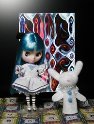
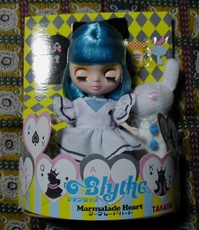

プチブライス マーマレードハート


不思議の国のアリスをイメージしたプチブライスです。右は透明なプラスチックパッケージから出した状態です。プチブライスには右の写真のように寝かせると目を閉じるというギミックがあります。左の背景は Winamp の MilkDrop プラグインを WinShot したものです。身長は 12cm ぐらいです。 私は顔の造りおよび奇抜なコンセプトという点からリトルプーリップのほうが好みです。リトルプーリップにもアリスがあり、それはテニエルの絵やディズニーのアリスのイメージを崩さないとてもかわいいものです。 一方のプチブライスは衣装の趣味はいいけど、一味足りないという印象を私は持っていて、顔も赤ちゃん顔でちょっと洗練されてないなと思っていました。 が、このマーマレードハートにはやられました。これまでの金髪碧眼のアリス像をうちやぶりながら、現代的なポップさを加えることで、アリスのイメージを保ちつつも、それが持っていた毒気をボーイッシュな「りりしさ」に転嫁できているように感じました。 しかし、女の子向け玩具は大変ですね。パッケージに入った状態だと髪の毛が抑え付けられているので、型が付いてしまっています。これをストレートヘアに直すのに一時間……いやもうちょっとかかりました。男向けフィギュアでは考えられない作業です。リボンはヘアピンのようなもので留めるのですが、マーマーレードなだけあって、なかなかリボンが決まらず、どいつの夢のせいだとヤキモキしましたよ。 でも、髪に型が付いているといっても、それは丁寧なパッケージゆえで、下着まで衣装がしっかりしています。これが 2000 円程度で手に入るんですから、驚くばかりです。匠魂の 1 個 525 円もすごいですがこれは多少ごまかしが効くジャンルです。この価格帯に前に紹介した SRDX やドルギアも含まれるのですが、その手間のかかり方の違いは歴然です。ヲタク向け萌えフィギュアと女性に広く浸透するブライスとでは数に差があるということなんでしょうか。 いずれにせよ中国オソルベシ。というかヲタクな私にとっては元高オソルベシ。でも、2005年7月21日の元切り上げが日本の株価上昇につながったと思ってる私には元安もまた困るわけで……。過大投資を回収しようとする民間の内需拡大策が効きすぎ対外債務の支払いに困ってアルゼンチンみたいになるのはやめてくれよー。 更新：06/02/13 初公開：2006年02月13日 12:44:35
Trackbacks: 《リトルプーリップ ファンタスティックアリス ピンク》 from JRF の私見：雑記 不思議の国のアリスをイメージしたリトルプーリップです。先に紹介したプチブライスよりもアリスのイメージを保っているように思います。このアリスにはブルーの色違いがあります。 リトプのクラッシクな２人のアリスに、独創的なマーマレードハート。どこかのアリスロワイヤルを思い出させますが、人に言えない過去を持ってるわけではないハズ。両者が似た時期に発売した事情には目をつぶるとして。 台が付属していないので他... 受信： 2006-03-23 20:44:43 (JST)
Links: ブライス: http://www.blythedoll.com/ (hbm) MilkDrop: http://www.milkdrop.co.uk/ (hbm) WinShot: http://www.woodybells.com/winshot.html (hbm) プーリップ: http://www.junplanning.co.jp/ (hbm)